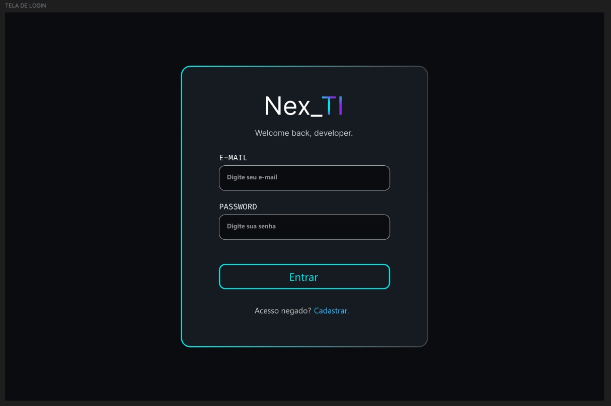
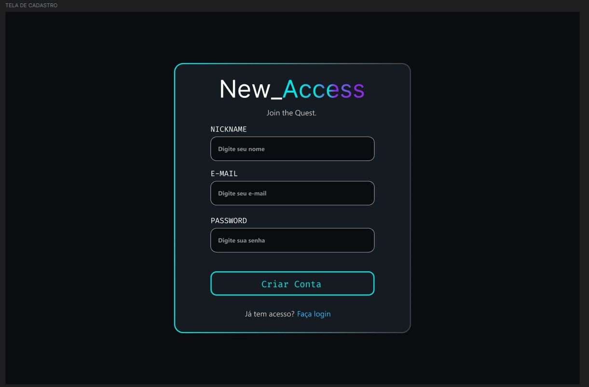
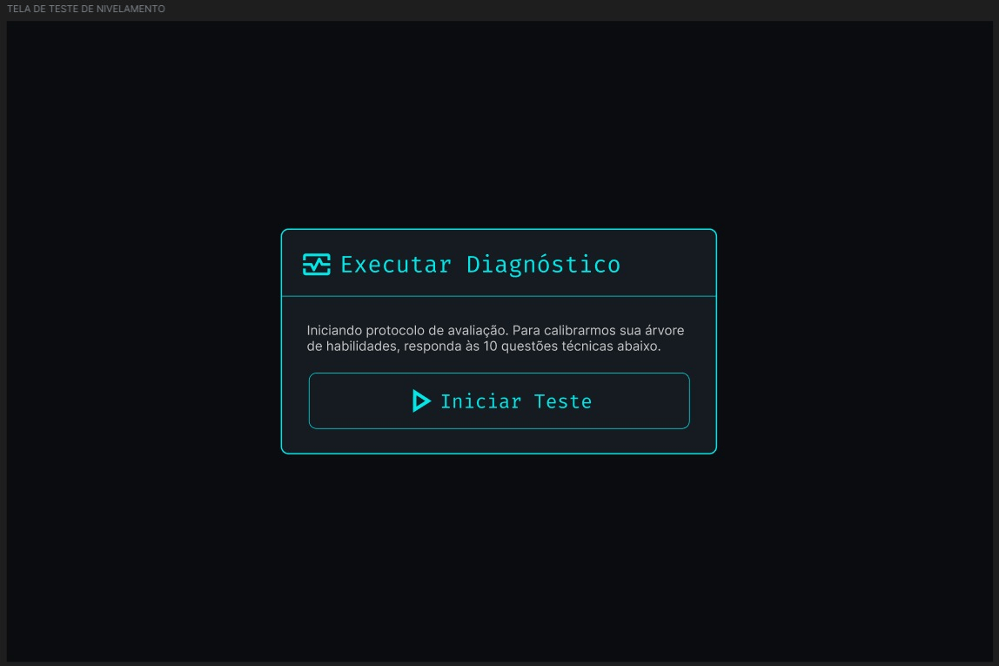

1 INTRODUÇÃO
A Nex_TI é uma solução educacional para apoiar estudantes ingressantes em Tecnologia da Informação no estudo de conceitos técnicos. Flashcards, revisão espaçada e gamificação compõem a proposta de apoio à aprendizagem. A redução da evasão e a melhoria da retenção são benefícios esperados, ainda dependentes de avaliação com estudantes.
Este relatório apresenta a evolução do projeto do PIM III para o PIM IV. O desenvolvimento está organizado nas nove etapas do manual disponibilizado à equipe, articulando negócio, responsabilidade social, Web, Mobile, arquitetura, banco de dados, infraestrutura e gestão ágil.
1.1 Objetivo geral
Desenvolver e documentar uma solução educacional com aplicação Web e aplicativo Mobile integrado, apoiada por uma API .NET e banco relacional. A versão examinada integra Web, Mobile e API ao mesmo banco de dados.
1.2 Objetivos específicos
Caracterizar a organização e a viabilidade da solução; propor ações de diversidade e inclusão; documentar interfaces e serviços; explicitar a arquitetura e o modelo de dados; planejar infraestrutura e entregas ágeis; verificar a correspondência entre especificação e implementação.
1.3 Método e delimitação
A revisão documental de 21 de outubro de 2026, atualizada em 22 de outubro após as entregas de Mobile, banco, administração e nuvem, confrontou as dez imagens do Manual PIM IV enviadas à equipe com o código e os documentos locais. Implementado significa identificado no repositório, sem implicar homologação em produção. Proposto indica decisão de projeto ainda a validar; pendente indica requisito sem evidência suficiente. Não foram realizados pesquisa de mercado, estudo de impacto pedagógico ou auditoria de conformidade legal.
2.1 Etapa 1 – Caracterização da organização
2 DESENVOLVIMENTO
A Nex_TI Educacional é uma empresa fictícia do segmento de tecnologia educacional (EdTech), concebida para oferecer apoio ao nivelamento de conhecimentos em TI. O modelo de negócio proposto combina atendimento a estudantes (B2C) e parcerias com instituições de ensino (B2B).
| Dimensão | Caracterização |
|---|---|
| Produtos e serviços | Plataforma Web e aplicativo Mobile de flashcards, revisão espaçada, simulados do ENADE e acompanhamento dos alunos por tutores. |
| Público-alvo | Ingressantes de cursos de TI e instituições que ofereçam ações de nivelamento. |
| Problemas identificados no projeto | Dificuldade inicial com termos técnicos, estudo pouco sistemático e ausência de acompanhamento contínuo da revisão. São hipóteses a validar com usuários. |
| Oportunidades | Organizar percursos de estudo, disponibilizar recursos acessíveis e permitir continuidade entre dispositivos. |
2.1.1 Estrutura organizacional proposta
Para a empresa fictícia, propõem-se quatro funções: gestão do produto e parcerias; curadoria pedagógica; desenvolvimento e operação tecnológica; atendimento e inclusão. Essas funções não representam cargos ou vínculos efetivos dos autores.
2.1.2 Principais processos
O processo pedagógico compreende selecionar conteúdos, revisar sua qualidade e publicar atividades. O aluno realiza cadastro, acessa a trilha, responde às atividades e acompanha o progresso. O processo de suporte recebe dúvidas e barreiras de acesso; a operação acompanha falhas, versões e proteção dos dados. Curadoria administrativa e suporte formal ainda precisam ser implementados.
2.2 Etapa 2 – Planejamento da solução tecnológica
Disciplina: Empreendedorismo em TI. A proposta de valor é reunir estudo ativo de fundamentos de TI, revisão espaçada e acompanhamento individual em uma experiência acessível. O recorte por conteúdo introdutório e a integração com ações de nivelamento institucional constituem diferenciais propostos, sem alegação de exclusividade no mercado.
A solução busca facilitar a criação de uma rotina de revisão e tornar o progresso visível. A efetividade será avaliada por conclusão de sessões, retorno ao estudo e desempenho em avaliações antes e depois do uso, com participação voluntária e tratamento adequado dos dados.
| Componente do negócio | Hipótese e forma de validação |
|---|---|
| Receita | Licenciamento institucional e oferta individual são alternativas propostas. Validar interesse e disposição de pagamento antes de definir preços. |
| Custos | Estimar hospedagem, banco, tráfego, suporte, manutenção e curadoria. A existência de opções gratuitas não demonstra custo operacional nulo. |
| Viabilidade técnica | Web, Mobile, API e banco relacional implementados sustentam o piloto; o principal limite é a infraestrutura gratuita, que hiberna sem uso. |
| Viabilidade econômica | Não demonstrada por dados financeiros. Calcular ponto de equilíbrio: custos fixos / (receita unitária − custo variável unitário), quando houver estimativas verificadas. |
| Riscos | Baixa adesão, custos de operação, inconsistência entre dispositivos e necessidade de revisão pedagógica. Mitigar com piloto limitado e critérios de aceite. |
2.2.1 Delimitação de escopo
A entrega atual contempla estudo Web e Mobile, autenticação na API, progresso e gamificação, perfis Aluno/Tutor/Administrador e painel com edição e exclusão de cartas. Dúvidas ao Tutor e o Agente Especialista (IA) ficam fora do escopo. Recursos presentes na interface não devem ser descritos como transações integralmente controladas pelo servidor.
2.3 Etapa 3 – Responsabilidade social e diversidade
Disciplina: Relações étnico-raciais e afrodescendência. A proposta social da Nex_TI é ampliar o acesso ao estudo de fundamentos tecnológicos, considerando desigualdades de acesso, diversidade de trajetórias e barreiras de participação. Recursos de acessibilidade são parte dessa proposta, mas não substituem ações explícitas de combate à discriminação.
| Eixo | Ação proposta e evidência de aceite |
|---|---|
| Relações étnico-raciais | Revisar exemplos, imagens e enunciados para evitar estereótipos; incluir contribuições de profissionais negros e afrodescendentes com fontes verificáveis. Evidência: registro de curadoria e conteúdos revisados. |
| Combate à discriminação | Definir política de uso e canal de relato com responsável e fluxo de resposta. Evidência: política publicada e teste do atendimento; ainda pendentes. |
| Valorização da diversidade | Representar diferentes trajetórias e contextos sociais sem pressupor experiência prévia em TI. Evidência: revisão pedagógica e participação de público diverso no piloto. |
| Acessibilidade | Há recursos de contraste, redimensionamento e semântica assistiva no Web. Validar teclado, leitor de tela e compreensão das atividades; a presença de atributos ARIA não comprova conformidade integral. |
| Cidadania digital | Propor orientação sobre privacidade, segurança e uso responsável da tecnologia em linguagem acessível. Avaliar entendimento com participantes. |
Essas ações constituem um plano de responsabilidade social. Não há neste relatório comprovação de campanha executada, validação por comunidade participante ou medição de impacto social. A eventual oferta de LIBRAS deve ser verificada quanto à disponibilidade e à compreensão do conteúdo, além da simples inclusão de uma ferramenta.
2.4 Etapa 4 – Desenvolvimento da solução Web
Disciplina: Desenvolvimento Web com .NET. A aplicação utiliza React 18 e Vite no frontend e ASP.NET Core .NET 10 no backend. O navegador acessa serviços HTTP; a API utiliza Entity Framework Core para comunicação com SQL Server.
O percurso Web compreende cadastro e login, acesso às trilhas, estudo de flashcards, acompanhamento de XP e moedas, simulados e as provas oficiais do ENADE de ADS (2017 e 2021), precedidas de um guia de estudos. Protótipos de Figma do acervo documentam decisões anteriores de interface; não são capturas da aplicação atual.
2.4.1 Autenticação, segurança e administração
A API implementa autenticação JWT, hash BCrypt, política de senha e limitação de tentativas de login e cadastro. Cada usuário tem um perfil (Aluno, Tutor ou Administrador), gravado no banco com restrição CHECK e enviado no token. Políticas de autorização por papel protegem as rotas administrativas: sem login, a API responde 401; com perfil insuficiente, 403.
A estrutura administrativa é um painel no site, aberto pelo menu do usuário. O Tutor acompanha cada aluno (XP, cartas estudadas, cartas a revisar no dia e cartas maduras) e edita ou exclui flashcards. O Administrador também define o perfil dos usuários, mas não o próprio, para o sistema não ficar sem administração. O primeiro Administrador é definido diretamente no banco. A adequação à LGPD exige trabalho específico sobre finalidade, transparência e direitos dos titulares; o hash de senha isoladamente não comprova conformidade.
2.4.2 Integração e limitações
A persistência é híbrida: o Web mantém estado local e usa a API para funcionalidades autenticadas. Desbloqueios de bônus e posições do mapa ficam no navegador, e não há fila de reenvio das respostas que falharem (o Mobile tem essa fila). A economia virtual requer consolidação das regras no servidor para evitar divergências.
Evidências: rotas da API, serviço administrativo, painel e manual técnico.
2.4.3 APIs REST e integração entre módulos
| Método e rota | Finalidade / controle |
|---|---|
| GET /api/status | Resposta de disponibilidade do processo; não testa a saúde do banco. |
| POST /api/auth/register; POST /api/auth/login | Cadastro e sessão; limitador de requisições. |
| GET /api/usuarios/{username} | Perfil do próprio usuário; JWT. |
| GET /api/fases; GET /api/fases/{codigoFase}/flashcards | Consulta de conteúdo. |
| POST /api/flashcards | Criação autenticada de cartão. |
| PUT /api/flashcards/{id}; DELETE /api/flashcards/{id} | Edição e exclusão de cartão; Tutor ou Administrador. |
| GET /api/tutor/alunos | Painel do Tutor com XP e números do SM-2 de cada aluno; Tutor ou Administrador. |
| GET /api/admin/usuarios; PUT /api/admin/usuarios/{id}/perfil | Lista de usuários e definição de perfil; Administrador. |
| GET /api/progresso/usuario | Progresso do usuário autenticado. |
| POST /api/progresso/atualizar | Registro da resposta e cálculo de revisão; JWT. |
| GET /api/usuarios/{username}/stats-detalhadas | Estatísticas pessoais; verifica titularidade. |
| PUT /api/usuarios/stats | Atualiza XP, moedas e nível; valores enviados pelo cliente. |
| GET /api/simulados/areas; GET /api/simulados/questoes | Consulta de áreas e questões. |
| GET /api/estatisticas/resumo | Resumo agregado disponibilizado pela API. |
Na revisão, o servidor identifica o usuário pelo token, calcula o próximo intervalo e grava o estado. O cálculo do navegador ainda difere do servidor.
2.5 Etapa 5 – Desenvolvimento da solução Mobile
Disciplina: Desenvolvimento Mobile. O aplicativo em React Native com Expo usa a mesma API e o mesmo banco do site. O conteúdo, o algoritmo de revisão e as regras de recompensa vêm do pacote compartilhado packages/shared, o mesmo usado pelo Web.
| Exigência | Implementação |
|---|---|
| Telas principais | Login e cadastro; Fases (trilha por módulo, com bloqueio); Estudo (carta, alternativas de múltipla escolha e botões do SM-2); Progresso (XP, moedas, nível e números do SM-2). |
| Fluxo de navegação | Login → Fases → Estudo → resultado da fase → Fases, com Progresso acessível pelas fases. A próxima fase só abre quando a anterior é concluída. |
| Autenticação | Cadastro e login pela API. O token JWT fica no SecureStore (Keychain/Keystore do sistema); sessão expirada (401) leva de volta ao login. |
| Sincronização | Com conexão, a resposta vai direto à API. Sem conexão, fica numa fila no aparelho (AsyncStorage, por usuário) e é enviada na próxima sincronização. Erros de regra (400) não voltam à fila, e só o último envio de XP é mantido. |
| Integração com APIs | Mesmas rotas do Web (autenticação, fases, progresso e usuário). Ao sincronizar, o app adota o agendamento do SM-2 calculado pelo servidor, mantendo a continuidade da conta entre Web e Mobile. |
2.5.1 Verificação
Dez testes automatizados cobrem o envio com e sem internet, a fila, a sincronização de XP e do SM-2, a liberação de fases, o tratamento de 400 e 401 e o envio do token. O pacote Android foi gerado com o Expo para conferir que todas as telas compilam. Resta registrar o uso em aparelho real pelo Expo Go.
Evidências: App.js, sincronização, testes e documentação do app.
2.6 Etapa 6 – Arquitetura de Software
Disciplina: Programação Aplicada em .NET. A solução está organizada em aplicações e módulos com responsabilidades distintas. Web e Mobile consomem a mesma API, que concentra as regras e o acesso ao banco.
| Camada / módulo | Responsabilidade |
|---|---|
| Apresentação Web e Mobile | React/Vite e React Native/Expo. Renderização, interação e estado de interface. |
| Endpoints | EndpointExtensions traduz requisições e resultados para HTTP e aplica controles de acesso. |
| Serviços | AuthService, ConteudoService, ProgressoService, GamificacaoService e AdminService concentram operações do domínio. |
| Domínio e algoritmo | Entidades C# e motor SM-2 modelam usuários, conteúdo e revisão. O agendamento é algorítmico; não constitui modelo de aprendizado de máquina treinado. |
| Persistência | AppDbContext, mapeamentos, migrations e serviços de carga inicial acessam SQL Server via EF Core. |
| Conteúdo compartilhado | packages/shared reúne conteúdo, SM-2, regras de gamificação e cliente da API, usados pelo Web e pelo Mobile. |
2.6.1 Orientação a objetos e modularização
Interfaces de serviços permitem separar contratos de implementação; a injeção de dependências conecta serviços aos endpoints. Classes de entidades representam dados e relacionamentos. Os papéis do caso de uso (Aluno, Tutor e Administrador) correspondem ao campo Perfil de Usuario, verificado pelas políticas de autorização da API.
Os diagramas UML do acervo são mantidos nas páginas seguintes como modelagem conceitual. Devem ser reconciliados com endpoints, entidades e fluxos atuais antes de serem tratados como representação integral da implementação. IA para alertar tutores permanece possibilidade futura, sem componente implementado.
2.6.2 Casos de uso e escopo planejado
Os atores Tutor e Administrador correspondem aos perfis implementados: o Tutor acompanha alunos e modera cartas; o Administrador também define perfis. Dúvidas ao Tutor e o Agente Especialista (IA) permanecem como escopo futuro.
2.6.2 Casos de uso e escopo planejado

Fonte: acervo do projeto Nex_TI, 2026.
2.6.3 Modelo de classes implementado
A figura apresenta as entidades da API (pasta Models), desenhadas a partir do código. As camadas e os serviços estão no diagrama de camadas, em modelagem-uml/02_Modelagem_UML; o diagrama de classes do PIM III segue no acervo como modelagem inicial.
2.6.3 Modelo de classes implementado (entidades)

Fonte: elaborado pela equipe, 2026.
2.6.4 Sequência conceitual das operações
A sequência do acervo representa a integração planejada. No fluxo implementado, a resposta é enviada à API, que calcula a revisão; no Mobile, respostas feitas sem conexão aguardam na fila.
2.6.4 Sequência conceitual das operações

Fonte: acervo do projeto Nex_TI, 2026.
2.7 Etapa 7 – Projeto do Banco de Dados
Disciplina: Programação de banco de dados. O banco é SQL Server (LocalDB no desenvolvimento, Azure SQL em produção), com esquema versionado por migrations do Entity Framework Core. O modelo separa conteúdo compartilhado e progresso individual, evitando copiar o flashcard para cada aluno.
| Entidade física | Chaves e finalidade |
|---|---|
| usuarios | PK id; índices únicos de username e email; senha_hash, perfil (CHECK: Aluno, Tutor ou Admin), nivel, xp e moedas. |
| fases / flashcards | PK codigo_fase / id; FK flashcards.codigo_fase → fases; conteúdo das cartas e, nas de múltipla escolha, alternativas e resposta. |
| progresso_flashcards | PK composta (usuario_id, flashcard_id); repetições, intervalo, fator de facilidade e próxima revisão. |
| tb_historico_revisoes | PK id; uma linha por revisão, gravada por trigger; índice por usuário e data. |
| cartas_moderadas | Cartas editadas ou excluídas por tutores; impede que a carga inicial as recrie. |
| tb_areas_conhecimento / tb_questoes / tb_alternativas | Questões do ENADE por área, cada uma com cinco alternativas e uma correta. |
| tb_provas / tb_prova_questao | Provas (ENADE 2017 e 2021) e associação N:N entre prova e questão. |
2.7.1 Script completo
O script NexTI_DB.sql cria o banco completo: tabelas, chaves, índices, procedures, funções, views, triggers e a carga de dados (29 fases, 702 flashcards, 2 provas e 46 questões). É gerado a partir das migrations e é idempotente: executado duas vezes seguidas em banco vazio, não apresentou erros. O schema.sql contém só a estrutura aplicada pela API em produção; o mapeamento está em AppDbContext.
2.7.2 Modelo entidade-relacionamento
O MER, em notação de Chen, foi refeito a partir do modelo físico atual: entidades, atributos identificadores e cardinalidades correspondem às tabelas e chaves estrangeiras das migrations. O DER do PIM III permanece no acervo como histórico.
MER da Nex_TI (notação de Chen)

Fonte: elaborado pela equipe, 2026.
2.7.3 Modelos lógico e físico
O modelo lógico mostra tabelas, chaves e relacionamentos sem depender do SGBD; o físico acrescenta tipos do SQL Server, valores padrão e restrições, como a verificação do perfil.
Modelo lógico da Nex_TI

Fonte: elaborado pela equipe, 2026.
Modelo físico da Nex_TI (SQL Server)

Fonte: elaborado pela equipe, 2026.
2.7.4 Procedures, triggers e validação do banco
| Objeto | Finalidade |
|---|---|
| tg_progresso_historico (trigger) | A cada inserção ou atualização do progresso, grava a revisão em tb_historico_revisoes. |
| tg_usuarios_protege_gamificacao (trigger) | Impede que XP ou nível diminuam, mesmo por fora da API (THROW 50001). |
| fn_nivel_por_xp; fn_cartas_devidas (funções) | Nível pelo XP, com as mesmas faixas do site; cartas a revisar em uma data. |
| vw_ranking_alunos; vw_desempenho_por_fase (views) | Ranking por XP e desempenho por fase. |
| sp_ranking_alunos; sp_estatisticas_aluno; sp_historico_revisoes | Procedures de consulta: ranking, estatísticas e histórico de um aluno. |
| sp_cadastrar_flashcard | Valida frente, verso e fase antes de inserir (THROW 50003 e 50004). |
Os objetos são criados pela migration ObjetosDoBanco, com cada comando dentro de EXEC para que o script idempotente continue válido. Como usuarios e progresso_flashcards têm triggers, o EF Core foi configurado para não usar a cláusula OUTPUT nessas tabelas. A criação foi verificada em banco vazio e a migration foi aplicada no Azure SQL de produção.
O uso de SQL Server e transações não garante, por si só, que toda operação de moedas esteja protegida contra inconsistência; a trigger de gamificação cobre XP e nível, e as moedas ainda dependem das regras da API.
2.8 Etapa 8 – Infraestrutura em Nuvem e DevOps
Disciplina: Cloud Computing e DevOps. O site está na Vercel, a API no Azure App Service e os dados no Azure SQL, todos em camadas gratuitas. A infraestrutura é criada pelo script provisionar.ps1.
| Item exigido | Implementação |
|---|---|
| Arquitetura e serviços | Navegador → Vercel (site) → App Service F1 (API) → Azure SQL serverless. O banco só é acessado pela API. |
| Containers | Dockerfile da API (build em dois estágios, runtime do ASP.NET, usuário sem privilégios) e do site (Vite + Nginx). O docker-compose sobe SQL Server, API e site com um comando. |
| Pipeline CI/CD | api-azure.yml: testes, publicação e deploy no App Service a cada push na main. docker.yml: a cada PR, monta as imagens, sobe o compose e testa status, conteúdo, cadastro, login e site. A Vercel publica o site e gera previews dos PRs. |
| Monitoramento | Application Insights (requisições, erros, tempo de resposta e consultas SQL) sobre Log Analytics com limite de 0,1 GB/dia; teste de disponibilidade em /api/status a cada 15 min, de três locais. A rota não acessa o banco, para não impedir a pausa do serverless. |
| Escalabilidade | O plano gratuito hiberna sem uso e tem cota de CPU; o banco pausa ocioso, e a primeira requisição pode levar até um minuto. Não há teste de carga; mudar de plano depende de medição. |
| Segurança | HTTPS obrigatório, CORS restrito ao site e aos previews, segredos nas configurações do App Service e dependência vulnerável corrigida (System.Security.Cryptography.Pkcs). |
Evidências: workflow da API, workflow dos contêineres, docker-compose e roteiro de implantação. Custos e cotas devem ser confirmados ao provisionar; não se presume gratuidade permanente.
2.8.1 Execução e operação
| Passo | Situação |
|---|---|
| 1. Provisionar | O script cria grupo de recursos, SQL, App Service e monitoramento; segredos ficam fora do código. |
| 2. Preparar dados | A API aplica as migrations e a carga inicial ao iniciar; o script completo do banco foi testado em banco vazio. |
| 3. Validar build | O CI executa os testes da API e testa os contêineres; os testes do pacote compartilhado e do Mobile rodam localmente. |
| 4. Publicar | Deploy automático no App Service e na Vercel a cada merge na main. |
| 5. Validar falhas | Testados contra a API: 401 sem token, 403 para perfil insuficiente e bloqueio de acesso à conta de outro usuário. O EF Core repete a conexão enquanto o banco serverless retoma. |
| 6. Observar | Disponibilidade, erros e tempo de resposta no Application Insights. |
O retorno de versão deve considerar o schema: a migration com triggers exige que a API desative a cláusula OUTPUT nessas tabelas, o que versões anteriores não fazem. Por isso, voltar o código exige também reverter a migration.
2.9 Etapa 9 – Gerenciamento Ágil do Projeto
Disciplina: Gerenciamento de Projetos Ágil. A equipe usa Scrum com quadro Kanban no PIM IV no Trello. O quadro tem sete listas: Referências, Product Backlog, Sprint atual, Em Andamento, Teste e Revisão, Concluído e Entregas. As capturas de Kanban do Apêndice A são do PIM III e ficam só como histórico.
2.9.1 Product Backlog
O Product Backlog tem 22 itens (PB01 a PB22). Os itens PB01 a PB09 ampliam requisitos do PIM III; PB10 a PB12 vêm da exigência de Mobile do manual; PB13 a PB15 retomam o que o PIM III deixou para o futuro; PB16 a PB22 organizam as exigências técnicas do PIM IV. Cada cartão tem etiqueta de prioridade (Alta ou Média) e de área (API, Web, Mobile ou Documentação), além de cartões para as nove etapas do manual.
| Situação em 22/10/2026 | Itens |
|---|---|
| Concluído (14) | PB03 Banco relacional; PB04 API; PB05 Web; PB06 Estudo com flashcards; PB07 SM-2; PB09 Gamificação; PB11 Autenticação Mobile; PB12 Sincronização; PB13 Módulo preparatório; PB14 Economia virtual; PB16 Acessibilidade; PB17 Arquitetura; PB18 Segurança; PB22 Documentação técnica. |
| Teste e Revisão (4) | PB01 Controle de acesso; PB08 Gestão de decks; PB10 Aplicação Mobile; PB15 Painel gerencial. |
| Sprint 5 (3) | PB19 Nuvem; PB20 DevOps; PB21 Testes e integração. |
| Product Backlog (1) | PB02 Gestão de usuários além dos perfis (edição de dados e exclusão de conta). |
Um item vai para Teste e Revisão quando o pull request está aberto, e para Concluído quando é integrado à branch main. Cada cartão recebe um comentário com o link do pull request e os responsáveis como membros.
2.9.2 Sprints, cronograma e entregas
As cinco sprints e suas metas estão nos cartões de referência do quadro. A coluna Entregue resume o que o histórico do repositório mostra em cada período.
| Sprint | Meta (Trello) | Entregue (repositório) |
|---|---|---|
| S1 · 08/08 a 21/08 | Planejamento: requisitos do PIM III, arquitetura, banco e priorização do backlog. | Planejamento no quadro; sem código no período. |
| S2 · 22/08 a 04/09 | Banco, APIs, cadastro, autenticação e controle de acesso. | Monorepo, site em React com SM-2 e gamificação, testes xUnit. |
| S3 · 05/09 a 25/09 | Aplicação Web, decks, flashcards e SM-2. | União dos três repositórios e modelagem UML. |
| S4 · 26/09 a 16/10 | Mobile integrado: telas, autenticação, APIs e sincronização. | Conteúdo compartilhado, segurança do login e publicação na Azure e na Vercel. |
| S5 · 17/10 a 30/10 | Testes, segurança, nuvem e DevOps, documentação e entrega. | API em camadas, UML, Mobile integrado, banco com triggers e procedures, administração, provas do ENADE, Docker, monitoramento e relatório. |
A execução não seguiu o plano à risca: a integração Mobile, meta da Sprint 4, foi concluída na Sprint 5, junto com o banco e a administração. Por isso a Sprint 5 concentrou entregas, o que reforça a necessidade de revisar a capacidade no planejamento de cada sprint.
2.9.3 Definição de pronto
Um item está pronto quando o código está num pull request revisado e integrado à main, os testes automatizados passam (API, pacote compartilhado, Mobile e contêineres), a documentação foi atualizada e o cartão do Trello tem o link da entrega. Prazos externos, como a apresentação de 27/10 e a postagem do PIM até 14/11, ficam na lista Entregas.
3 CONCLUSÃO
A revisão reorganiza a documentação da Nex_TI segundo as nove etapas do manual do PIM IV. A organização fictícia, a proposta de solução, as ações de responsabilidade social, a arquitetura, o banco de dados e os planos de operação e gestão passam a ter escopo e evidências explícitos.
O repositório demonstra uma aplicação Web em React e um aplicativo Mobile em React Native que usam a mesma API .NET e o mesmo banco SQL Server, com perfis de acesso, painel administrativo, procedures e triggers, contêineres e monitoramento em nuvem. A persistência do Web continua híbrida, e os resultados não permitem afirmar eficácia pedagógica medida.
Permanecem necessários: o teste do aplicativo em aparelho real; a revisão da capacidade das sprints, já que a última concentrou entregas; a validação das ações de inclusão e da viabilidade econômica; e a unificação do cálculo de revisão entre navegador e servidor. A conclusão de cada requisito deverá ser apoiada por evidências verificáveis.
REFERÊNCIAS
ANKI. Powerful, intelligent flashcards, 2026. Disponível em: <ankiweb.net>.
BRASIL. Lei Geral de Proteção de Dados (LGPD), 2018. Disponível em: <planalto.gov.br>.
ELMASRI, R.; NAVATHE, S. Sistemas de Banco de Dados. 6. ed. Pearson, 2011. Disponível em: <books.google.com>.
EQUIPE NEX_TI. Repositório PIM_IV: código e documentação técnica. Revisão local em 22 out. 2026. As referências do PIM III (SILVA et al.) documentam o histórico do projeto.
FOWLER, Martin. UML Essencial. 3. ed. Bookman, 2014. Disponível em: <books.google.com>.
INSTITUTO NACIONAL DE ESTUDOS E PESQUISAS EDUCACIONAIS ANÍSIO TEIXEIRA (INEP). ENADE: provas e gabaritos de Tecnologia em Análise e Desenvolvimento de Sistemas, 2017 e 2021. Brasília: INEP. Disponível em: <gov.br/inep>. Acesso em: 22 out. 2026.
ISO/IEC. ISO/IEC 25010 (Quality Requirements), 2011. Disponível em: <iso.org>.
KRUG, Steve. Não Me Faça Pensar. 3. ed. Alta Books, 2014. Disponível em: <books.google.com>.
PRESSMAN, R.; MAXIM, B. Engenharia de Software. 8. ed. AMGH, 2016. Disponível em: <books.google.com>.
SCHWABER, K.; SUTHERLAND, J. The Scrum Guide, 2020. Disponível em: <scrumguides.org>.
SILVA, M. D. I. et al. PIM III - Nex_TI (Documentação UML). GitHub, 2026. Disponível em: <github.com>.
SILVA, M. D. I. et al. PIM III - Nex_TI (Parte Teórica). GitHub, 2026. Disponível em: <github.com>.
SOFTEX. MPS.BR - Guia Geral, 2021. Disponível em: <softex.br>.
SOMMERVILLE, Ian. Engenharia de Software. 10. ed. Pearson, 2019. Disponível em: <books.google.com>.
UNIVERSIDADE PAULISTA. Manual PIM IV – ADS. Trechos disponibilizados à equipe em dez imagens, pasta MACIEL, arquivos datados de 19 out. 2026. A versão integral e seus dados bibliográficos devem ser conferidos na entrega final.
APÊNDICE A – REGISTROS HISTÓRICOS
As imagens seguintes pertencem ao quadro Kanban do PIM III. São mantidas para documentar a origem do projeto e não constituem evidência das sprints ou entregas atuais do PIM IV.
Kanban histórico do PIM III — planejamento

Fonte: acervo do projeto Nex_TI, 2026.
Kanban histórico do PIM III — execução

Fonte: acervo do projeto Nex_TI, 2026.
FICHA DE CONTROLE — ACERVO HISTÓRICO
Grupo Nº: 02 Ano: 2026 Período: Diurno
Tema: Desenvolvimento de plataforma web de avaliação e apoio à aprendizagem
Alunos:
| RA | Nome | Visto do aluno |
|---|---|---|
| H67HJI4 | Gabriel Alves Moreira | |
| R280985 | Maciel Costa da Silva | |
| H719CD3 | Maycon Douglas Inácio Silva | |
| H7858F9 | Miguel Angel Fernandez Ortiz | |
| H6722I0 | Rafael Mesquita |
Os registros de março a maio abaixo foram preservados do relatório anterior. As datas e descrições não foram revalidadas e não devem ser apresentadas como atas do PIM IV. Inserir a ficha atual validada pela equipe antes da entrega.
Registros históricos:
| Data do encontro | Observações |
|---|---|
| 05/03 | 1ª Reunião: Leitura do Manual do PIM e definição técnica. |
| 12/03 | 2ª Reunião: Criação do Backlog, C# e SQL. |
| 18/03 | 3ª Reunião: UX/UI e WAI-ARIA. |
| 22/03 | 4ª Reunião: Alinhamento final da prototipagem e ABNT. |
| 26/03 | 5ª Reunião: Injeção do C# e estruturação final. |
| 29/03 | 6ª Reunião: Finalização e integração dos diagramas UML. |
| 05/04 | 7ª Reunião: Integração dos protótipos WEB. |
| 17/04 | 8ª Reunião: Reformulação do DER e Script SQL Server. |
| 03/05 | 9ª Reunião: Alinhamento de manuais de extensão e física do Mapa Neural. |
| 24/05 | 10ª Reunião: Refatoração SOLID da API backend em C#. |
APÊNDICE B – PROTÓTIPOS DO ACERVO
Protótipos anteriores de Login, Cadastro e Nivelamento, preservados como histórico de design. Não são telas Mobile nem evidência visual da aplicação React atual.
Protótipo de Login

Fonte: acervo do projeto Nex_TI, 2026.
Protótipo de Cadastro

Fonte: acervo do projeto Nex_TI, 2026.
Protótipo de nivelamento
Protótipo de Nivelamento

Fonte: acervo do projeto Nex_TI, 2026.